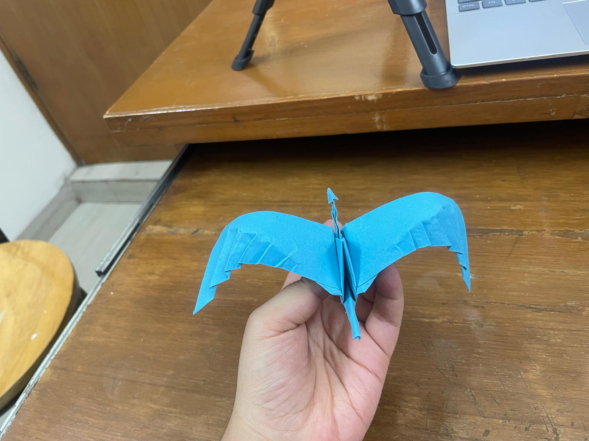
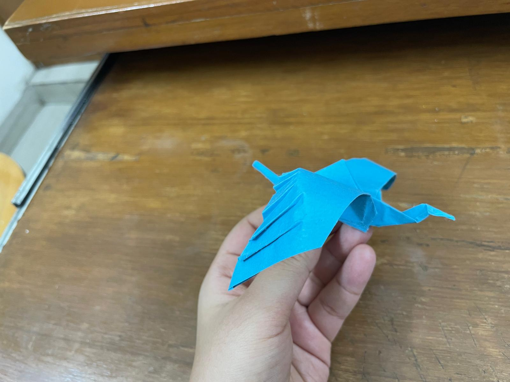
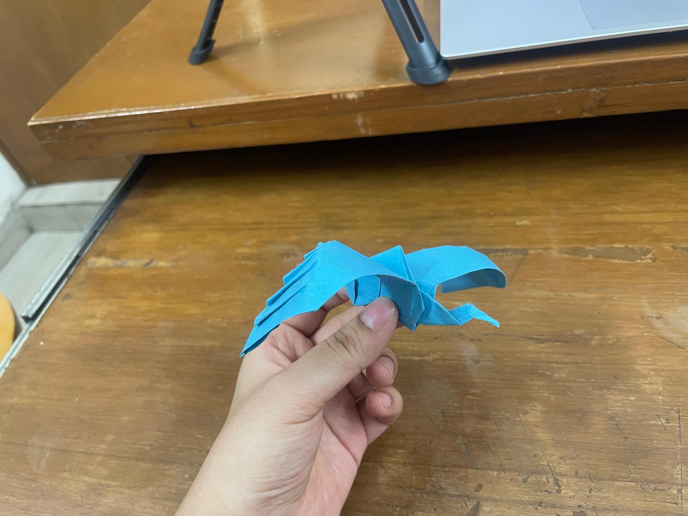

Origami
Flapping Crane

About This Piece
This is Jeremy Shafer’s Origami Flapping Crane. I folded it by following his tutorial . I liked this model because it has the movement of a traditional flapping bird, but the shape looks more like a crane.
The final model is really fun to hold and flap, especially because the wings open out so clearly.
Final Crane

